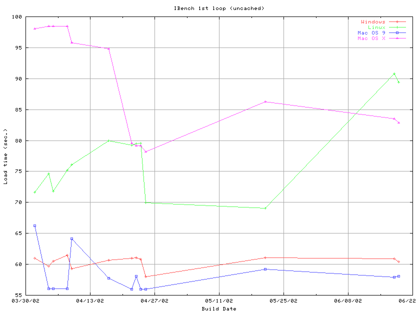
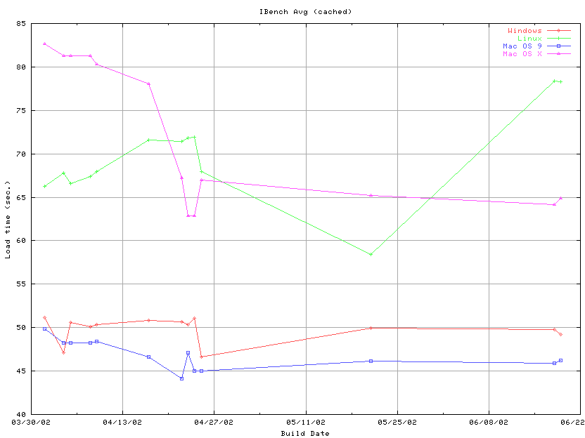

IBench Result
Created by barrettl on 4/23/2002, updated on 06/19/2002Overview
The table below outlines the latest Ibench timings. Tests were run against the machine configurations described below. Times are provided in seconds. When graphing the data, in the case where there is no result for a platform on a given date, the number from the previous day is used to give continuity to the graph.


| Build ID | Windows 98 1st Load (uncached) | Windows 98 Avg | Red Hat Linux 6.2 1st Load (uncached) | Red Hat Linux 6.2 Avg | Mac OS 9.0 1st Load (uncached) | Mac OS 9.0 Avg | Mac OS X 1st Load (uncached) | Mac OS X Avg |
|---|---|---|---|---|---|---|---|---|
| Communicator 4.76 | 49.87 | 41.61 | Testing in Progress | Testing in Progress | Testing in Progress | Testing in Progress | NA | NA |
| NS 6.01 | 175.10 | 129.99 | Testing in Progress | Testing in Progress | Testing in Progress | Testing in Progress | NA | NA |
| NS 6.1 | 72.00 | 64.94 | Testing in Progress | Testing in Progress | Testing in Progress | Testing in Progress | Testing in Progress | Testing in Progress |
| NS 6.2.1 | 72.94 | 65.84 | Testing in Progress | Testing in Progress | Testing in Progress | Testing in Progress | Testing in Progress | Testing in Progress |
| 2002-06-19-08-1.0 | 60.42 | 49.21 | 89.41 | 78.30 | 58.10 | 46.21 | 82.85 | 64.92 |
| 2002-06-18-08-1.0 | 60.91 | 49.78 | 90.80 | 78.38 | 57.88 | 45.87 | 83.54 | 64.13 |
| 2002-05-21-08-1.0.0 | 61.08 | 49.95 | 69.09 | 58.45 | 59.19 | 46.15 | 86.29 | 65.22 |
| 2002-04-25-08-1.0.0 | 57.95 | 46.65 | 69.93 | 67.99 | bad build | bad build | 78.18 | 66.98 |
| 2002-04-24-08-1.0.0 | 60.81 | 51.04 | 79.54 | 71.89 | 55.94 | 44.99 | bad build | bad build |
| 2002-04-23-08-1.0.0 | 61.08 | 50.31 | 79.48 | 71.83 | 58.04 | 47.09 | 79.18 | 62.85 |
| 2002-04-22-08-1.0.0 | 60.97 | 50.70 | 79.21 | 71.43 | 55.95 | 44.16 | 79.60 | 67.19 |
| 2002-04-17-13-1.0.0 | 60.64 | 50.84 | 79.96 | 71.62 | 57.75 | 46.63 | 94.83 | 78.08 |
| 2002-04-09-08 | 59.27 | 50.37 | 76.11 | 67.99 | 64.12 | 48.42 | 95.81 | 80.35 |
| 2002-04-08-09 | 61.46 | 50.08 | 75.20 | 67.37 | 56.04 | 48.28 | 98.49 | 81.32 |
| 2002-04-05-06 | 60.47 | 50.62 | 71.82 | 66.59 | 56.04 | 48.28 | 98.49 | 81.32 |
| 2002-04-04-06 | 59.71 | 47.11 | 74.66 | 67.78 | 56.04 | 48.28 | 98.49 | 81.32 |
| 2002-04-01-06 | 60.96 | 51.12 | 71.65 | 66.22 | 66.22 | 49.82 | 98.08 | 82.63 |
Configurations:
The following target configuration were tested.
- HP Vector VL Pentium II 266mhz with 128 mb of ram running Windows 98 SE
- HP Vector VL Pentium II 266mhz with 128 mb of ram running Red Hat Linux 6.2
- Power Mac G3 266 mhz with 128 mb of ram running Mac OS 9.0
- Power Mac G3 266 mhz with 128 mb of ram running Mac OS 10.1.2
Setup
- Install the ns mojo using the recommended installation
- Remove all profiles and start the browser with the only one profile so the profile manager is not encountered
- Turn the sidebar off in the view menu
- In the preference panel set the first page to be displayed to about blank.
- Reboot the machine before the launch timing is taken